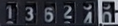
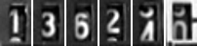
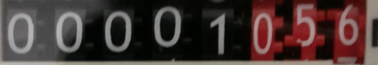
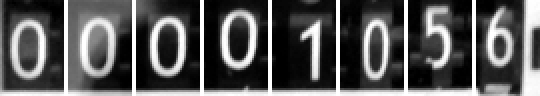
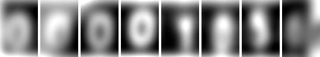

Thuật toán chỉ dùng hình học ô YOLO, số bánh đã cấu hình. Không nhận chữ số tham khảo hoặc kết quả đọc; không giải cứu trường hợp thiếu/đa nghĩa window. Đây là thử nghiệm trên cùng ảnh đã xem, không phải phép đo độ chính xác độc lập.
{
"fullyLabelledOriginals": 3,
"rowsRead": 1,
"upstreamRoundedExact": 1,
"wrongAboveThreshold": 0,
"aboveThreshold": 1,
"note": "Post-baseline exploratory geometry change, evaluated on reused images; not a held-out benchmark."
}Đối chiếu tạm: 007664
{'status': 'rejected', 'reason': 'Multiple complete geometric grids remain; no best-answer or confidence tie-break selection', 'businessProposal': None}
Đối chiếu tạm: 007664
{'status': 'no_window', 'businessProposal': None}
Đối chiếu tạm: 007664
{'status': 'no_window', 'businessProposal': None}
Đối chiếu tạm: 26762?
{'status': 'ambiguous_window', 'businessProposal': None}
Đối chiếu tạm: 13624?


Upstream làm tròn: 136240; confidence ô yếu nhất: 0.961
Đối chiếu tạm: 00001056


Upstream làm tròn: 00001056; confidence ô yếu nhất: 0.954
Đối chiếu tạm: 00001056

Upstream làm tròn: 00001058; confidence ô yếu nhất: 0.184
Đối chiếu tạm: 00001056
{'status': 'no_window', 'businessProposal': None}
Đối chiếu tạm: 13038
{'status': 'no_window', 'businessProposal': None}